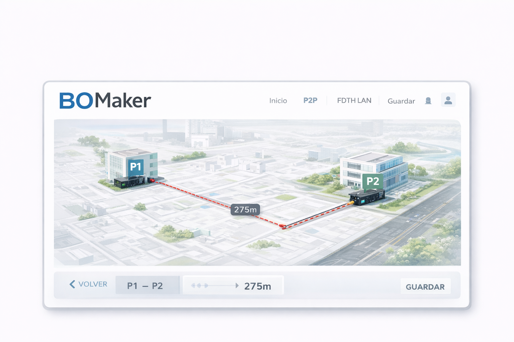
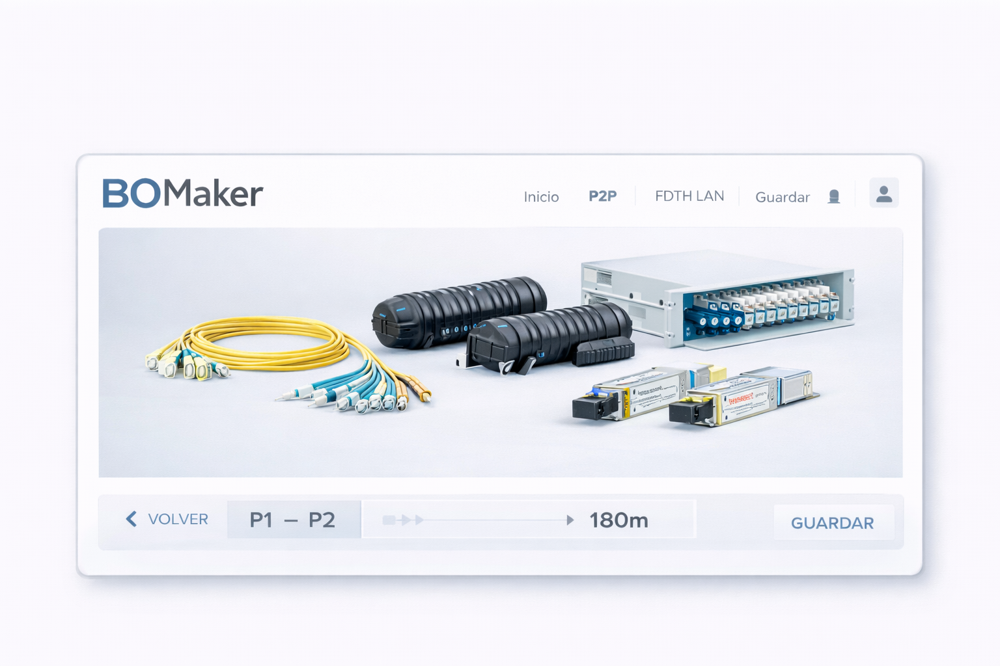

BOMaker es una plataforma diseñada para simplificar la creación de soluciones tecnológicas, permitiendo estructurar proyectos completos de forma rápida, organizada y visual.
Desde redes de fibra óptica hasta soluciones de switching, BOMaker permite construir, visualizar y escalar arquitecturas tecnológicas sin necesidad de procesos complejos.
Actualmente la hemos desarrollado para nuestro personal pero pronto estará disponible para nuestros clientes, facilitando la toma de decisiones y reduciendo tiempos de implementación.
Muy pronto podrás diseñar soluciones completas en minutos. Mientras, contactanos para ayudarte a diseñar y estructurar tu próximo proyecto de fibra óptica o networking.
Contáctanos por WhatsApp